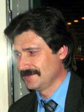
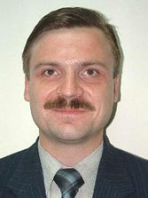

Главная >>> Информация для прессы
Пресс-релиз 20.03.2007 г.
Новая рекламная площадка в РуНете
В конце 2006 года руководителям проекта "Исходники.Ру"
(www.sources.ru) поступило предложение о выводе сайтов *.sources.ru на рынок бизнес-услуг. После бурного обсуждения предложения среди участников форума было принято согласованное решение о необходимости реализации коммерческого направления в дальнейшем развитии проекта, что позволит не только улучшить ресурс, но и помочь посетителям найти новое приложение для своих знаний и умений.
За семь лет существования "Исходники.Ру" превратились из скромного веб-сайта в целое сообщество взаимосвязанных ресурсов:
www.sources.ru,
forum.sources.ru,
alglib.sources.ru,
e-science.sources.ru,
pascal.sources.ru,
palmos.sources.ru.
Количество сайтов сообщества постоянно расширяется, сейчас в разработке находятся ещё несколько интересных пректов.
Несмотря на то что проект развивался исключительно на энтузиазме создателей и участников при отсутствии сторонней финансовой поддержки и каких-либо PR-акций, "Исходники.Ру" вошли в десятку наиболее уважаемых программистских ресурсов и стабильно удерживают достойное место в рейтингах популярности по тематике "Программирование".
Статистика проекта "Исходники.Ру" (на 19 марта 2007 г.):
-
Посетителей в сутки - от 4 до 7 тысяч;
-
Хитов в сутки - в среднем 30-40 тысяч;
-
Общее количество хитов - более 48 миллионов;
-
Количество сообщений на форуме - более миллиона (1,394,614);
-
Количество тем на форуме - 154,970;
-
Количество тематических разделов на форуме - более 100;
-
Количество зарегистрированных участников на форуме - 51,829
(из них активных - 21,771).

"Таким количеством хитов может похвастаться далеко не каждый интернет-ресурс, а тем более такой специализированный программистский портал, - утверждает Валерий Вотинцев, координатор проекта "Исходники.Ру". - Популярность ресурса обеспечивается за счёт удачно выбранной нами концепции. Во-первых, это практическая направленность и оригинальный способ подачи материала в виде "HowTo", что позволяет использовать накопленные нами материалы и как своеобразную "базу знаний" по различным направлениям информационных технологий, и как неплохой обучающий ресурс. Во-вторых, на сайте и на форуме создана обстановка дружелюбности и творческой инициативы, тщательно оберегаемая энтузиастами-модераторами. Кроме того, мы стараемся привнести в общение дополнительный интерес - постоянно проводим всевозможные голосования, игры, конкурсы, викторины и встречи участников в разных городах".

"Первоначально сайт задумывался как некоммерческий интернет-проект для русскоговорящих программистов бывшего СССР и всего мира, - говорит основатель "Исходников" Дмитрий Уткин. - История сайта начинается с мая 2000 года, когда был зарегистрирован домен и началось наполнение сайта материалами. Кроме сбора и сортировки уже имеющихся в интернете статей мною был переведен на русский язык приличный объём информации с MSDN. Собственные наработки и алгоритмы также заняли достойное место в коллекции сайта. Довольно быстро у "Исходников" появился форум и ресурсы-спутники, которые органично вписались в проект и образовали содружество "Исходников"".
На "Исходниках" накоплен огромный объём информации по программированию и информационным технологиям, которая пользуется спросом среди широкого круга специалистов - от студентов IT-специальностей до профессиональных разработчиков и администраторов информационных систем. "В последнее время ресурс стал представлять интерес не только для программистов, но и для продавцов программного обеспечения, компьютерной техники и комплектующих. На наши сайты регулярно "заглядывают" не только специалисты известных российских и зарубежных "софтверных" компаний, но и ведущих мировых фирм по разработке "железа"", - поясняет Валерий Вотинцев.
С декабря 2000 года хостинг для проекта предоставляет компания ММТ.РУ. "Сотрудничество с независимыми разработчиками программного обеспечения - одно из стратегических направлений деятельности нашей фирмы. Естественно, как только энтузиасты "Исходников.Ру" обратились к нам за технической помощью, мы не раздумывая предложили им разместить ресурс на нашей технической базе, - вспоминает Александр Привалов, генеральный директор ООО "ММТ.РУ". - Кстати, информационные материалы "Исходников" существенно помогли нам выполнить серьезные информационные проекты для наших корпоративных заказчиков, в том числе для DaimlerChrysler, Volvo Cars, Volvo Trucks, OKI Europe Ltd. и ряда других. А при восстановлении и последующей доработке информационной системы, которой сейчас пользуется Комитет Рекламы, Информации и оформления г. Москвы, эта помощь была просто неоценима".
"Наша компания никогда не вмешивалась в идеологию проекта, и мы будем придерживаться такой политики и в дальнейшем, - заявляет Александр Привалов. - Но в последнее время всё чаще заметен интерес потенциальных рекламодателей к сети Интернет, в частности, к тематическим ресурсам. Поэтому мы порекомендовали руководителям проекта "Исходники.Ру" "попробовать" ресурс в роли рекламной площадки, и, если эта идея будет удачной, то можно предложить услуги независимых программистов бизнес-сообществу и в более широком плане".
"Мы планируем размещать рекламную информация на сайтах "Исходников.Ру" в самой различной форме, и формы представления будут постоянно совершенствоваться, - говорит Дмитрий Уткин. - Проект постоянно пополняется новыми материалами, разделами, рубриками, и может возникнуть потребность в дополнительных формах размещения информации и рекламы. Если у рекламодателя появятся пожелания насчет проведения эксклюзивной рекламной кампании, мы готовы предоставить оригинальное решение. Кроме того, любая фирма может принять участие в одной из проводимых промо-акций, предоставив в качестве призов свою продукцию и услуги, что будет способствовать дополнительной популяризации брендов компании среди профильной аудитории".
Означает ли принятие решения о коммерческом использовании ресурса, что "Исходники.Ру" теперь станут платными? "Ни в коем случае! - в один голос заявляют Дмитрий Уткин и Валерий Вотинцев. - Даже если в будущем решениями проекта "Исходники.Ру" заинтересуется бизнес-структуры, то основная концепция сайтов не поменяется. Исходные тексты и обсуждение на форуме были и будут бесплатны для всех. А для бизнеса мы просто создадим еще один сайт в рамках проекта, когда это будет востребовано".
Новая рекламная политика "Исходников.Ру" приведена в приложении к пресс-релизу.
Для первых рекламодателей предусмотрены значительные скидки и бонусы.
Более подробную информацию можно получить на сайте
в разделе для прессы (www.sources.ru/press/, доступ свободный), или непосредственно у координатора проекта:
Валерий Вотинцев
Тел.: 8 (910) 400-3246
E-mail: adv@sources.ru